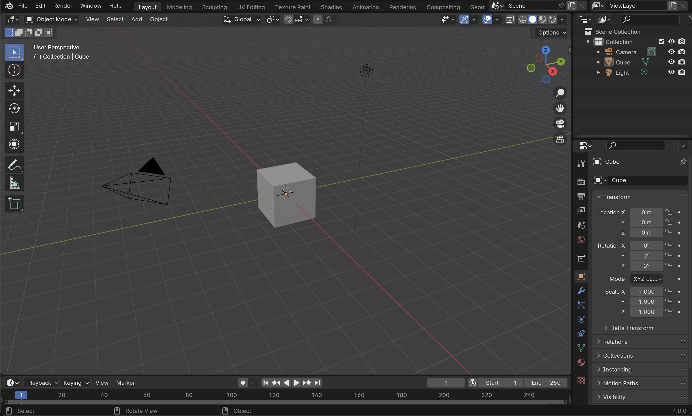

Getting Started
My journey with Blender spans over five years of self-learning. It’s all about losing the fear of not knowing how something works, of messing things up, and of not knowing how to reproduce something you just did.
I’ve discovered that the best way to learn is to dive in with an idea in mind. There are a million ways to do the same thing.
Here, I want to share how I learned to do the things I do, my personal tricks, and what I’ve discovered along the way, so you can take inspiration and find your own path in Blender.
First Impressions
So you've just managed to download Blender, open it (by creating a New File → General) and this is what you see.

The main areas you’ll notice are:
- 3D Viewport: this is the big central space where you’ll do most of your work — modeling, moving things around, sculpting, and so on.

- Properties Panel: on the right side, this is where you control details of your objects, materials, modifiers, and rendering. Think of it as the “settings hub.”

- Outliner: usually on the top right, this shows a list of all the objects in your scene. If the 3D Viewport is the stage, the Outliner is the backstage list of all the props.

- Timeline: at the bottom, this is mainly for animation, but even if you’re not animating, it’s good to know it exists.

Navigation in the 3D Viewport
Before anything, you need to get comfortable moving around.
- Orbit: rotate the view around your objects. (
Left click and button drag)

- Pan: slide the view left, right, up, or down. (
Shift + Left click)

- Zoom: move closer or further away. (
Scroll wheel or Ctrl + middle mouse drag)

Use the Navigation Gizmo in the top-right corner of the 3D Viewport to see your scene from different perspectives; front, side, top, bottom, etc.

This way:

Moving Things Around

Left click an object to select it (it highlights in orange).
Shift + Left click to select multiple objects.
A selects all objects in the scene.
You can also select them by clicking on their listed names at the outliner.

Press G (for “grab”), then move your mouse.
Press X, Y, or Z to lock movement to that axis.
Once you have it where you want it, finish the action by hitting Enter or Left Click anywhere in the viewport. Many other tools like rotate, scale, etc. end with this action too.
Creating Default Files
When you open Blender, you can set up your scene once and save it as your default startup file.
This is important to us because using the right units keeps your models consistent and accurate, especially if you’re preparing them for 3D printing or fabrication.
To set up our file for 3D printing go to Properties → Scene → Units and choose Metric, change to centimeters length and set up your Unit Scale to 0.1.

! Note: Because of this change, we’ll need to adjust some offsets when exporting. We’ll cover the details in the Exporting for 3D Printing section.
To make the grid more useful for precise modeling, you can change its scale.
Go to Viewport Overlays → Guides → Scale and set it to 0.01.

This is the basic setup. To make Blender remember it, go to File → Defaults → Save Startup File → Overwrite.

Now, every time you open Blender, your scene will start with these settings already in place.
Going A Little Further (Optional)
It might be useful to leave some other settings prepared for a practical workflow, like installing addons or adjusting rendering settings, which we’ll look at in more detail as we go forward.
The point near the cube is a light, and the square is a camera. We don’t need these for now, so we can delete them... we can even get rid of the cube too. (¬‿¬)

Select everything with A, then press X and click on delete the selected objects — this includes the cube, the camera, and the light.
Finally!